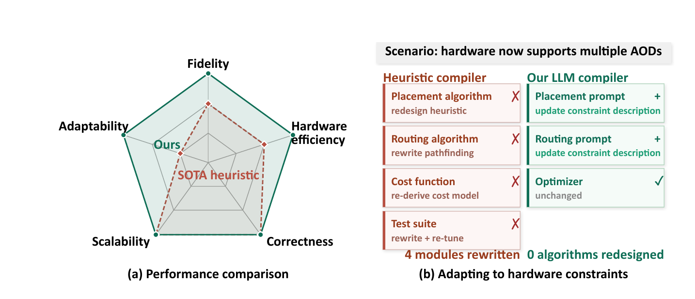
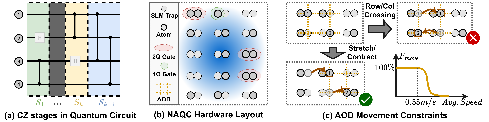
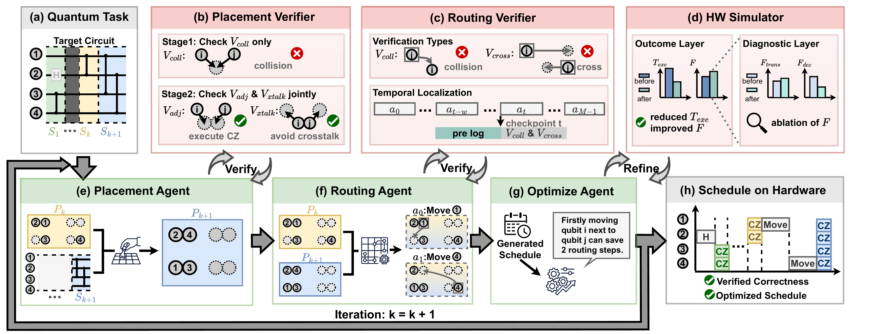
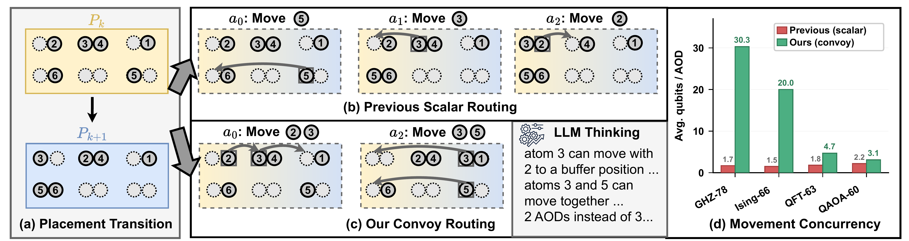
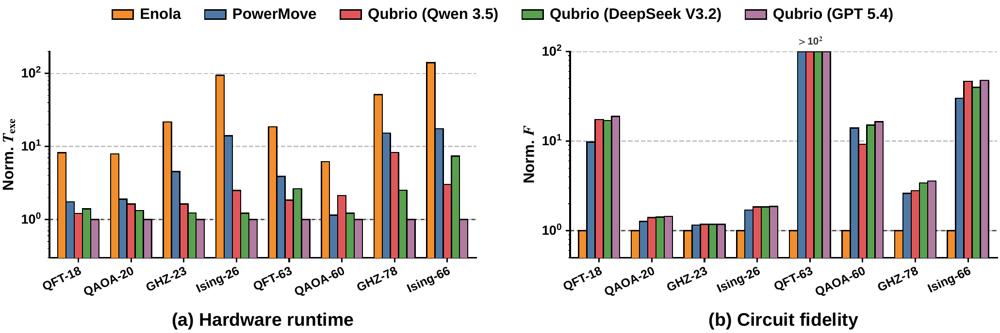
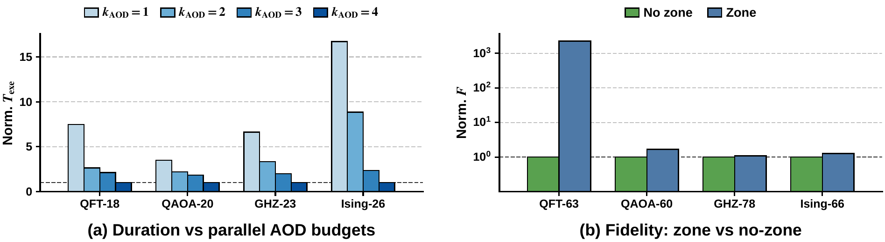
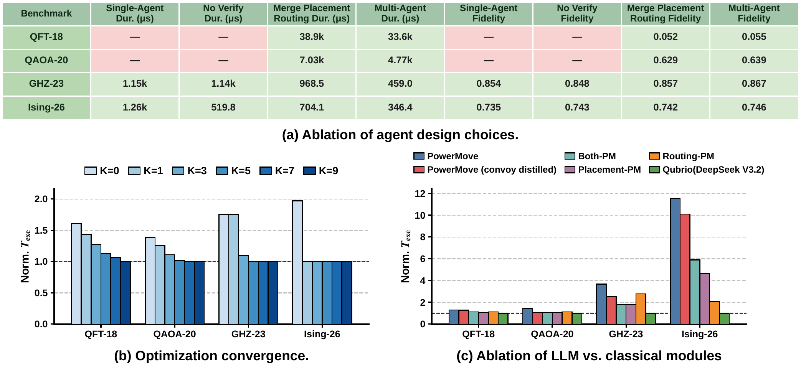

Qubrio
High-Performance Quantum Compilation via Multi-Agent LLM Collaboration
Large Language Models (LLMs) offer an adaptable alternative to traditional quantum compilation heuristics, which bottleneck progress by demanding costly manual redesigns whenever hardware evolves. We introduce Qubrio, a practical agentic framework that significantly reduces heuristic redesigns through a three-level decomposition: (1) partitioning programs into sequential operation stages, (2) deploying specialized agents for placement, routing, and optimization, and (3) using disaggregated feedback for precise error correction. Beyond serving as a direct compiler, Qubrio uncovers novel convoy-style shuttling strategies, achieving 4.7× hardware-runtime and 1.3× fidelity improvements over the SOTA compiler PowerMove on neutral atom hardware.

Qubrio reduces hardware runtime by 4.7× on average and improves circuit fidelity by 1.3× over the state-of-the-art NA compiler PowerMove, while seamlessly adapting to new hardware capabilities (parallel AODs, zoned architectures) via simple prompt updates.
Introduction
Quantum compilation, the process of translating high-level quantum algorithms into hardware-executable instructions, is a key challenge in enabling practical quantum computation. Existing quantum compilers typically rely on domain-engineered heuristics to handle diverse hardware constraints. Adapting to new hardware features often requires domain experts to redesign heuristics and rewrite substantial portions of the compilation pipeline.
Against this backdrop, LLMs offer a promising solution. They have demonstrated strong capabilities in program synthesis, code optimization, and reasoning over structured representations, suggesting they can learn compilation logic directly from hardware descriptions. However, naive single-pass LLM compilation fails in practice under three orthogonal sources of pressure:
- Input complexity: A full quantum program exceeds the regime in which current LLMs reason reliably.
- Task heterogeneity: Compilation couples sub-tasks with distinct reasoning modes (spatial assignment vs. sequential trajectory planning), inducing cross-task interference.
- Feedback ambiguity: Overall performance scores do not localize which constraint was violated nor which step caused the violation.
We address these challenges through a three-level decomposition that relieves pressure at each stage of the compilation process: input decomposition partitions the program into manageable stages, task decomposition assigns sub-tasks to specialized agents, and feedback decomposition replaces scalar rewards with structured, multi-dimensional signals.
Furthermore, our LLM framework uncovers novel strategies that facilitate a highly parallel routing pattern, which we term 'convoy-style shuttling'. The agent learns to leverage buffer positions and continuous motion to align multiple qubits into synchronized movements, a non-trivial optimization that complements existing domain expertise.
Contributions
- An Adaptable Agentic Compiler Framework with three-level decomposition that overcomes the failures of single-pass LLMs.
- LLM-Driven Heuristic Discovery. Qubrio uncovers convoy-style shuttling strategies, transferable into classical compilers as standalone heuristics.
- SOTA Efficacy and Prompt-Driven Adaptability. Qubrio outperforms PowerMove with average improvements of 4.7× hardware runtime and 1.3× fidelity, easily adapting to new hardware via prompt updates.
Background

Figure 1. Quantum circuit structure and neutral atom hardware. (a) Circuits decompose into sequential stages of parallel CZ interleaved with single-qubit gates. (b) Atoms reside in static SLM and are shuttled into interaction distance for two-qubit gates. (c) Atom movements prohibit row and column crossings, requiring controlled transport velocities to ensure high movement fidelity (Fmove).
Quantum Compilation Problem
Quantum compilation translates a high-level quantum program into executable operations on a quantum processor. Because hardware limits two-qubit interactions to adjacent positions, an n-qubit circuit is decomposed into a temporal sequence of stages {S1, …, SK}. Each stage requires solving two coupled optimization tasks: placement (mapping logical qubits to physical positions) and routing (moving qubits to adjacent positions for two-qubit gate interaction).
Neutral Atom Quantum Computing
Neutral atom quantum computers (NAQCs) have emerged as one of the leading platforms for scalable quantum computation, offering long coherence times, high-fidelity operations, and flexible reconfigurability. Unlike localized SWAP operations in superconducting and trapped-ion systems, NAQC routing requires global movement planning across the entire qubit array, governed by three critical hardware constraints:
- Topological Ordering: The AOD grid can stretch or contract, but rows and columns can never cross.
- Velocity Bounds: Shuttling speed must be controlled to prevent atom loss.
- Transfer Penalties: Each SLM–AOD transfer incurs a non-negligible error, forcing a trade-off between minimizing transfers and minimizing routing time.
Qubrio: A Three-Level Decomposition Framework

Figure 2. Multi-agent framework for quantum compilation. LLM agents (e–g, green) generate placements, routes, and optimizations; deterministic verifiers (b–d, red) enforce constraints and evaluate performance. Agents iteratively refine outputs via structured feedback until all constraints are satisfied, producing a verified, optimized schedule (h).
Three-Level Decomposition
Qubrio is structured around three complementary forms of decomposition that relieve pressure at each stage of the compilation loop:
Input Decomposition
Partitions a quantum program into sequential CZ operation stages {S1, …, SK}, so that each stage fits within the context length over which LLMs reason reliably.
Task Decomposition
Assigns sub-tasks to specialized agents (Placement, Routing, and Optimize), each matched to one reasoning mode, eliminating cross-task interference.
Feedback Decomposition
Replaces overall performance scores with structured signals: verifiers localize constraint violations, and the simulator decouples fidelity into transfer-penalty and decoherence components.
Specialized Agents
Placement Agent
Computes the qubit-to-trap mapping Pk+1: Qk+1 → T for each CZ stage, ensuring CZ pairs stay within interaction distance r and non-interacting pairs maintain separation > r to eliminate crosstalk.
Routing Agent
Determines a sequence of M discrete AOD operations to shuttle atoms while respecting non-crossing constraints, velocity bounds, and minimizing SLM–AOD transfers.
Optimize Agent
Iteratively refines the schedule by sampling candidate modifications and evaluating them against the Hardware Simulator using outcome–diagnostic feedback decomposition.
Verifiers
Deterministic checkers that localize constraint violations: placement collisions, adjacency errors, crosstalk, AOD crossings, and trajectory conflicts at specific timesteps.
Hierarchical Verification & Feedback
The placement verifier localizes errors into three structured sets: Collision (qubits sharing a trap), Adjacency (CZ pairs placed too far apart), and Crosstalk (non-interacting pairs placed too close). A two-stage reasoning pipeline first establishes a valid topological baseline, then jointly reports adjacency and crosstalk to navigate their opposing spatial pressures.
The routing verifier provides spatio-temporal localization: every violation is annotated with the offending qubits and the specific step t at which it occurred. This causal signal allows the agent to surgically modify the offending segment while preserving valid portions of the routing sequence.
Outcome–Diagnostic Optimization
The Optimize Agent receives a two-layer feedback structure: the Outcome Layer reports hardware runtime (Texe) and fidelity (F), while the Diagnostic Layer decouples F into transfer penalty and decoherence components. A candidate is accepted only if it improves at least one of Texe or F without degrading the other.
Convoy-Style Shuttling
Applying Qubrio, we identify a novel routing pattern that substantially improves hardware schedule efficiency. Unlike previous compilers that route qubits independently along shortest paths, our agent groups qubits with spatially compatible trajectories to displace them in a single, coordinated movement.

Figure 3. Convoy routing overview. (a) Placement transition between two CZ stages. (b) Scalar routing: qubits are moved individually. (c) Convoy routing: multiple qubits are moved in lockstep, reducing hardware runtime and decoherence. (d) Movement concurrency across benchmarks: Qubrio achieves up to 30.3 qubits per AOD on GHZ-78 versus 1.7 for prior compilers.
(1) Strategic Use of Buffer Positions
The agent often utilizes buffer positions to perform subtle local adjustments. By intentionally deviating from individual shortest paths, the agent aligns qubits whose movements would otherwise be incompatible, allowing them to form a shared convoy. Since AOD rows and columns move in tandem, this deliberate synchronization effectively converts idle hardware cycles into concurrent movements without introducing crossing or collision violations.
(2) Minimizing Transfer Penalties
The agent discovers that maintaining atoms in continuous motion across consecutive AOD rounds avoids the penalties associated with repeated SLM–AOD transfers. Effectively, the agent converts the physical fidelity model into a scheduling constraint that favors sustained convoy membership over naive round-by-round re-optimization.
Why is this discovery notable? (1) The LLM discovers parallelization strategies without explicit heuristic guidance. (2) The strategies are non-trivial, requiring joint reasoning over AOD constraints, transfer penalties, and decoherence. (3) The pattern is directly actionable: buffer utilization and continuous motion can be extracted as standalone heuristics, with our distilled version recovering 38% of the total runtime reduction when integrated into the PowerMove baseline.
Experimental Results
We compare Qubrio against Enola and the SOTA NA compiler PowerMove on QASMBench programs (QFT, QAOA, GHZ, Ising) with up to ~10⁴ gates. We evaluate three LLM backbones: Qwen-3.5, DeepSeek-V3.2, and GPT-5.4, to assess backbone sensitivity.
Average over PowerMove on NA hardware
Across all benchmarks (incl. QFT-63)
Vs. Enola at ~60-qubit scale
Qwen-3.5, DeepSeek-V3.2, GPT-5.4
End-to-End Comparison
Hardware runtime (normalized to Qubrio GPT-5.4) and circuit fidelity (normalized to Enola) across all benchmarks. Qubrio consistently reduces runtime and improves fidelity over Enola and PowerMove for all three LLM backbones.

Figure 4. End-to-end comparison of Qubrio against Enola and PowerMove. (a) Hardware runtime, normalized to Qubrio (GPT-5.4). (b) Circuit fidelity, normalized to Enola. On the most challenging QFT-63 circuit, Qubrio recovers fidelity from 10⁻¹⁶ (PowerMove) to 10⁻⁸.
Quantitative Speedup over Baselines
Average runtime speedup of Qubrio (GPT-5.4) over Enola and PowerMove, broken down by circuit size and structure.
| Configuration | Speedup vs. Enola | Speedup vs. PowerMove |
|---|---|---|
| ~20-qubit circuits | 19.1× | 3.8× |
| ~60-qubit circuits | 30.3× | 5.9× |
| Qubrio (DeepSeek-V3.2) | 12.7× | 2.5× |
| Qubrio (Qwen-3.5) | 10.4× | 2.1× |
Table 1. Performance gains are inherent to the agentic architecture and consistent across LLM backbones. The advantage scales with circuit size — Qubrio is particularly effective on larger and more regular circuits.
Adaptability to New Hardware
Qubrio adapts to two emerging hardware capabilities (multi-AOD parallelism and zoned architectures) through simple prompt updates, with no changes to the underlying compilation logic.

Figure 6. Qubrio adapts to new hardware capabilities via prompt updates. Multi-AOD parallelism reduces schedule duration as the AOD budget grows, and a natural-language description of zoned layouts improves fidelity across all benchmarks, with a 2263× improvement on QFT-63.
Multi-AOD Scenario
A single additional AOD already yields substantial duration reductions across all benchmarks, with further gains as kAOD increases. Qubrio updates only the AOD budget in the prompt; heuristic compilers would require redesigning the router and rederiving the cost model.
Zoned Architecture
By appending a natural-language description of the zone layout to the prompt, fidelity improves consistently across all benchmarks, with a notable 2263× improvement on QFT-63. The agent exploits zone partitioning automatically, without explicit instruction.
Ablation Studies
Architectural Ablations
We isolate the contribution of each architectural decision by comparing pipeline configurations, sweeping optimizer turns K, and progressively replacing LLM agents with heuristic PowerMove counterparts.

Figure 5. (a) Ablation of agent design choices. Single-Agent and No-Verifier configurations fail to produce valid schedules on QFT-18 and QAOA-20 (shown as "—"), confirming that agent decomposition and verification are complementary. The full Multi-Agent pipeline reduces duration by an average of 1.6× over the merged placement-routing variant. (b) Optimizer convergence: K=5 captures the bulk of the improvement; without optimization (K=0), schedules are on average 1.7× longer. (c) Ablation of LLM vs. classical modules. The routing stage benefits more from LLM reasoning than the placement stage, due to the larger combinatorial search space of sequential trajectory planning. Distilling convoy-style shuttling into the PowerMove baseline recovers 38% of the total runtime reduction, demonstrating practical transferability of LLM-discovered heuristics.
Key Findings
Decomposition is Essential
Single-agent pipelines fail on circuits as small as QFT-18. Both stage-wise input decomposition and placement–routing task decomposition are necessary for reliability.
Verifiers are the Critical Glue
Closed-loop deterministic verification — not just LLM reasoning — is what makes the pipeline produce valid schedules. Verifier and decomposition are complementary.
Heuristics Transfer Back
Convoy-style shuttling, distilled into the classical PowerMove compiler, recovers 38% of the runtime reduction, highlighting Qubrio's value as a heuristic-discovery tool.
Backbone Robustness
Performance gains are consistent across Qwen-3.5, DeepSeek-V3.2, and GPT-5.4, confirming that improvements stem from the architecture, not from any specific model's capabilities.
BibTeX
@inproceedings{qubrio2026,
title = {Qubrio: High-Performance Quantum Compilation via Multi-Agent LLM Collaboration},
author = {Anonymous Authors},
booktitle = {Advances in Neural Information Processing Systems (NeurIPS)},
year = {2026},
note = {Under double-blind review.
Anonymous repo: https://anonymous.4open.science/r/Qubrio-486C}
}